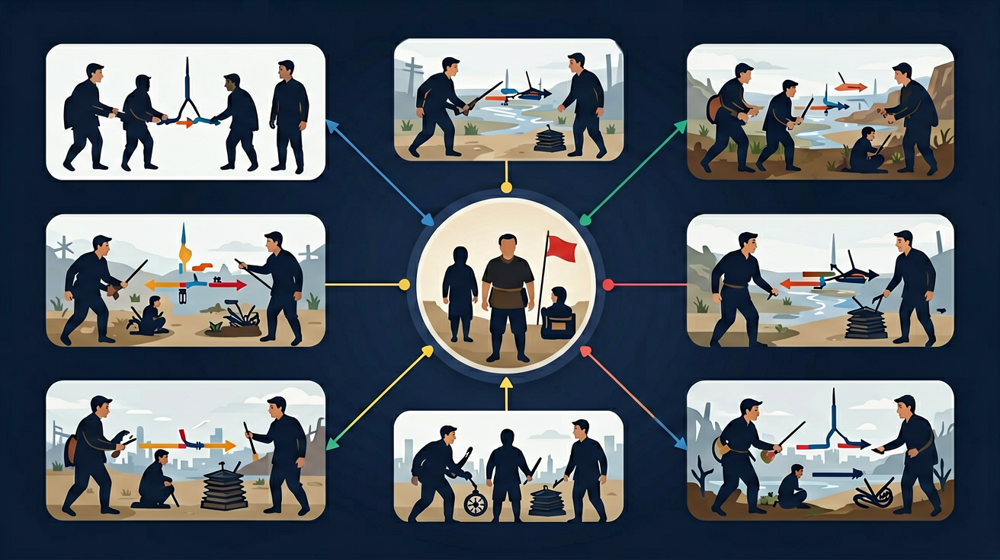
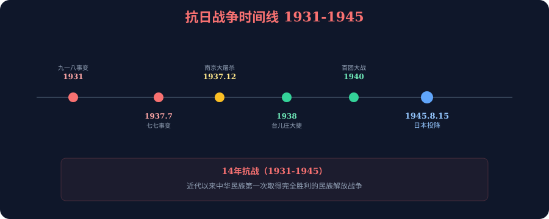
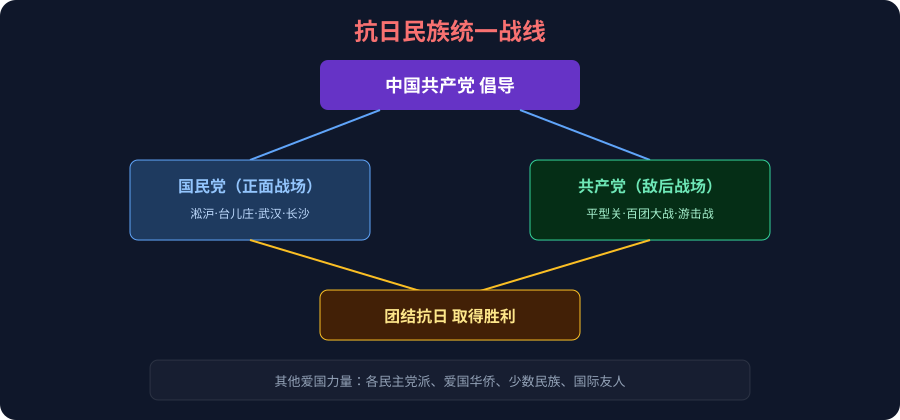
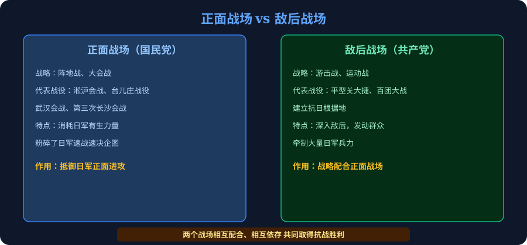

❓ 为什么说九一八事变是抗战的开始？
❓ 淞沪会战为什么被称为'东方的凡尔登'？
❓ 课本说'持久战'，到底要'持'多久？
学完这一课，这些问题你都能自信地回答。
🎯 能说出抗日战争起止时间及标志性事件
🎯 能判断正面战场与敌后战场的战略差异
🎯 能分析抗日民族统一战线形成的历史意义
1931—1945 · 全民族抗战 · 近代史上第一次完全胜利的民族解放战争
"中国人民抗日战争，是近代以来中国反抗外敌入侵第一次取得完全胜利的民族解放战争。"
——习近平，2015年9月3日
先测一测你对北伐战争知识的掌握情况！
And：1920年代末，中国刚刚经历北伐战争，形势本应好转—— But：1931年，一声炮响，东北沦陷；1937年，战火蔓延全国—— Therefore：一场史无前例的民族危机迫使中国人必须团结起来，奋起抗争。

点击时代按钮切换疆域版图；悬停高亮边界；点击红色城市标记查看详情。
分析太行山游击队照片中的装备与环境特点
「抗日战争」不只存在于课本：在日常生活里找到一个真实场景——例如家里、上学路上或新闻中的实际例子，用本课的结论解释它。
把你的场景讲给 AI 学伴听，让它帮你判断解释是否准确、条件是否完整。
And：面对日本全面侵华，国共两党正处于对立状态—— But：民族危亡关头，个人恩怨必须让步于国家存亡—— Therefore：抗日民族统一战线建立，中华儿女用血肉筑起新的长城。
1936年12月12日，张学良、杨虎城发动"兵谏"，扣押蒋介石，提出停止内战、一致抗日。经中共力主和平解决，蒋介石接受停止内战的主张。西安事变的和平解决，成为国共再次合作、共同抗日的重要转折点。
1937年9月，国共两党正式宣布合作，抗日民族统一战线正式建立。
· 国民党领导正面战场，组织大规模会战
· 共产党开辟敌后战场，建立抗日根据地
· 各民主党派、工农群众、爱国华侨、少数民族共同参与


And：两个战场协同作战，无数英雄奋勇杀敌—— But：日军同时制造了震惊世界的滔天罪行—— Therefore：这段历史，既是英雄的史诗，也是不能忘却的民族记忆。
打响全面抗战第一枪，牵制日军主力，粉碎了日军3个月速胜中国的计划。中国军队伤亡惨重，最终失守。
正面战场最大的胜利之一！中国军队在台儿庄歼灭日军约3万人，极大地鼓舞了全国军民的抗战信心。
持续四个月的大规模会战，日军虽占武汉，但损失惨重，此后抗战进入相持阶段。
八路军115师在平型关设伏，歼灭日军精锐1000余人，打破了"日军不可战胜"的神话，是敌后战场的第一个重大胜利。
彭德怀指挥八路军105个团，在华北地区大规模破坏日军铁路、公路，共进行大小战斗1800余次，有力打击了日军的"囚笼政策"。
1937年12月，日军攻占南京后，对中国平民和战俘进行了长达六周的大规模屠杀。
· 死难者达30万人以上
· 无数妇女遭受暴行
· 城市财物遭到大规模劫掠和破坏
南京大屠杀是日本军国主义残暴侵略的铁证，也是中华民族永远不能忘记的历史伤痛。每年12月13日为"南京大屠杀死难者国家公祭日"。
点击战役标记查看详情
And：经过14年艰苦卓绝的抗争，中国军民付出了巨大牺牲—— But：正义终将战胜邪恶—— Therefore：1945年9月2日，日本正式签署投降书，中华民族书写了近代史上最辉煌的篇章。
全民族团结抗战，建立了广泛的抗日民族统一战线，这是抗战胜利最根本的保证。
中国共产党坚持抗战、反对投降，发挥了中流砥柱的作用，是团结全国抗战的核心力量。
苏联、美英及国际反法西斯力量的支持，特别是苏联出兵东北，加速了日本的失败。
正义战争必然战胜侵略战争，中国人民的抗战具有正义性，最终赢得了人心和历史的审判。
近代史上第一次完全胜利：是中华民族近代以来反抗外来侵略第一次取得完全胜利的民族解放战争。
世界反法西斯战争的重要组成部分：中国战场是世界反法西斯战争的东方主战场，为世界反法西斯战争的胜利做出了重要贡献。
民族复兴的历史转折点：从此，中华民族开始由衰败走向振兴，为建立新中国、实现民族复兴奠定了基础。
国际地位空前提高：中国作为战胜国，成为联合国安理会五个常任理事国之一，国际地位大幅提升。
1931年9月18日，日军炸毁沈阳附近铁路，嫁祸中国军队，随即炮轰沈阳。这是日本侵华的起点，也是14年抗战的开端。
1937年7月7日，日军在卢沟桥借口士兵失踪向中国守军开炮，标志日本全面侵华战争爆发。
国共两党停止内战，联合全国各族人民共同抗日，是抗战胜利的根本保证。
正面战场（国民党）以阵地战抵抗日军正面进攻；敌后战场（共产党）以游击战深入敌后，两者相互配合。
按时间轴拆分为局部抗战（1931-1937）与全面抗战（1937-1945）两阶段
日本侵华是蓄谋已久的战略，中国抗战是世界反法西斯战争东方主战场
对比国民党正面战场阵地战与共产党敌后游击战的不同战术特点
通过《黄河大合唱》等文艺作品感受全民族抗战精神
思考当代国际冲突中弱小国家抵御侵略的策略选择
以时间轴的形式，列出1931—1945年间抗日战争的10个重要事件，注明时间、地点和意义。
从战略方针、代表战役、战场特点、历史作用四个维度，制作表格比较正面战场和敌后战场，并写出你的综合评价。
结合抗日战争的史实，分析"抗战精神"（不畏强暴、团结奋斗、自强不息）的内涵，并联系现实，谈谈抗战精神对当代中国青年的启示。要求500字以上，有史有论，论从史出。
先独立作答，再点选项查看对错与错因。
照片中游击队使用的'地道战'主要出现在哪个地区？
下列哪项是敌后战场与正面战场的显著区别？
百团大战的主要战略目的是什么？
抗战时期中国共产党在敌后建立的第一个抗日根据地是____根据地
答案：晋察冀
1937年聂荣臻率部创建，被毛泽东誉为'模范根据地'
____事变标志着中国全民族抗战的开始
答案：卢沟桥
1937年7月7日该事变爆发后，国共实现第二次合作
点击地图标记查看战役信息
✅ 应从1931年九一八事变算起共14年
💡 混淆'全面抗战'与'局部抗战'时间界限
✅ 中国战场牵制日军主力是根本原因
💡 忽视中国战场的决定性作用
抗日战争是一部全民族团结奋战的英雄史诗，可以从三条主线把握：
从九一八（1931）到七七事变（1937），从局部抗战到全面抗战，中国人民在不断深重的民族危机中走向了全民族的觉醒和团结。
正面战场与敌后战场相互配合，共同构成了全民族抗战的完整格局。国民党将士在正面战场浴血奋战，共产党在敌后战场发动群众持久作战。
1945年的胜利来之不易，是全民族团结的结晶。它不仅是近代史上第一次完全胜利，更是中华民族由衰到盛、走向复兴的历史转折点。
1931九一八 → 1937.7七七事变 → 1937.12南京惨案 → 1938台儿庄 → 1940百团大战 → 1945.8.15日本投降
正面国民大会战，淞沪台武阵地拼；
敌后共产游击战，平型百团根据地。
两个战场相配合，共同抗日赢胜利。
第一次完全胜利 · 东方主战场 · 民族复兴转折点 · 国际地位提高
选择一个问题或自由输入，和 AI 学伴一起深入探讨：